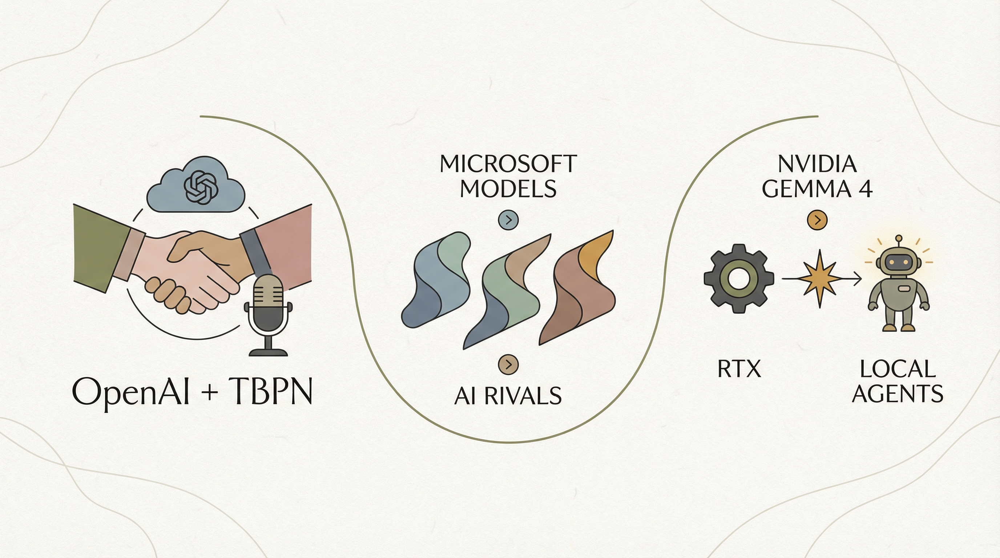

Anthropic推出永久在线AI模型Conway，革新全球劳动力市场。
两克伴AIGC日报
2026-04-03 星期五

本期关注：Anthropic的惊人升级：Claude永久在线，全球劳动力革命化 - 36氪、1.2亿招首席科学家，优必选如何避免Meta的坑、展示HN：SkillCompass – 从6个维度诊断和提升AI代理技能、美图旗下的RoboNeo已接入Seedance 2.0。
📰 行业动态
优必选招聘首席科学家，竞争顶尖人才以应对AI时代挑战。
🔥 今日焦点
SkillCompass是一款针对Claude Code和OpenClaw的技能评估与进化引擎。该工具通过六个维度（结构、触发、安全、功能、比较、独特性）对用户的技能进行评分，并识别出最薄弱的环节进行优化，逐步提升整体技能水平。此外，SkillCompass还能在模型改进后识别出不再必要的技能，提高AI代理的效率。该工具运行于本地，并需要Node.js v18+版本的支持。
SkillCompass的重要性在于，它为AI开发者提供了一种高效、全面的技能评估与优化方案，有助于提升AI代理的智能化水平。在AI领域，随着技术的不断发展，如何评估和提升AI代理的技能成为了一个关键问题。SkillCompass的出现，为解决这个问题提供了有力支持，有助于推动AI技术的进步和应用。
美图公司旗下AI Agent产品RoboNeo近日宣布正式接入Seedance2.0，带来连续镜头一键生成、声画同步输出、素材一致性智能控制等三大能力升级。这一举措标志着美图在AI领域的进一步深耕，同时也为整个AI行业带来了新的活力。
RoboNeo的此次升级，核心在于实现连续镜头的一键生成。这意味着用户只需提供简单的指令，RoboNeo即可自动生成连续的镜头效果，大大降低了用户的使用门槛，提高了创作效率。同时，声画同步输出和素材一致性智能控制的功能，使得生成的视频内容更加自然流畅，为用户带来更优质的视觉体验。
沐曦股份与上海人工智能实验室近日联合推出高性能GPU算子生成系统Kernel-Smith。该系统融合了“稳定评估驱动的进化智能体”与“面向进化的后训练范式”，依托Intern-S1-Pro大模型进行深度定制化训练。Kernel-Smith的创新之处在于，它通过深度学习技术，实现了GPU算子的自动生成与优化，有效提升了算子性能。
这一系统的发布对AI领域具有重要意义。首先，它为GPU算子的开发提供了高效、智能的解决方案，有助于加速AI算法的迭代与优化。其次，Kernel-Smith的推出将推动GPU算子生成技术的发展，为AI应用提供更强大的算力支持。最后，该系统有助于降低AI算子开发的门槛，促进AI技术的普及与应用。
近日，全球权威大模型盲测榜单LMArena发布新一期排名，阿里巴巴最新一代大语言模型Qwen 3.6-Plus在Code Arena榜单中登顶中国最强编程模型，位居全球第二。这一成绩标志着我国在AI编程领域取得了重大突破，展现了我国大模型在技术实力上的显著提升。
此次榜单的发布具有重要意义。首先，它反映了我国在AI编程领域的国际竞争力。Qwen 3.6-Plus在榜单上的优异表现，证明了我国在AI大模型研发方面的实力，有助于提升我国在全球AI领域的地位。其次，榜单的权威性有助于推动AI编程技术的发展。作为最具公信力的大模型盲测平台之一，LMArena的排名具有很高的参考价值，有助于业界了解AI编程领域的最新动态。
📚 深度长文
本文来自Reddit用户u/One_Key_8127，对Gemma 4模型进行了深入分析。文章核心观点是，Gemma 4在Mac Studio M1 Ultra上的表现与Qwen3.5相当，但在实际测试中，Gemma 4的表现远超Qwen。Gemma 4的思维链更加简洁、有帮助且连贯，而Qwen则存在很多内在的误导和循环。此外，Gemma 4在视觉理解和多语言处理方面也表现出色。作者对mlx-vlm的prompt缓存处理提出了疑问，并对TurboQuant的期待。本文对AI从业者和研究者具有重要的参考价值，揭示了Gemma 4的独特优势，为后续研究提供了有益的启示。
---
本文由Jennifer Mossalgue撰写，探讨了AI技术如何使得独立创始人实现亿元级成就。文章核心观点在于，AI的进步正在重塑创业格局，为独立创始人提供了前所未有的机遇。关键论据包括：
1. AI工具的普及使得独立创始人能够高效处理设计、营销、数据分析等复杂任务，从而降低创业门槛。
2. 通过AI技术，独立创始人可以快速迭代产品，缩短市场验证周期，提高成功率。
3. AI驱动的个性化推荐和精准营销，帮助独立创始人精准触达目标用户，提升转化率。
📄 重点论文
**核心贡献**: 提出了一种基于大型语言模型（LLM）的框架，用于自动生成和优化高性能GPU内核，通过CuTe技术实现。
**与AI Agent的关联**: 为AI Agent提供了一种自动化的工具生成方法，有助于提高Agent的执行效率和性能。
**核心贡献**: 提出了一种用于机构资产管理的自主智能体架构，通过多个智能体协同工作，实现资产配置和优化。
**与AI Agent的关联**: 展示了多智能体系统在资产管理中的应用，为AI Agent在复杂决策场景中的应用提供了参考。
**核心贡献**: 提出了一种将技能内化到模型参数中的方法，通过上下文感知强化学习，使AI Agent能够更好地掌握技能。
**与AI Agent的关联**: 为AI Agent的技能学习和内化提供了新的思路，有助于提高Agent的执行能力和适应性。
🛠️ 产品推荐
Agentdid是一款基于加密证明的AI代理技术，旨在确保AI代理背后有真实人类操作。该产品通过创新的技术手段，为AI代理提供可信的身份验证，解决AI代理操作过程中可能出现的信任问题。对于技术从业者而言，Agentdid不仅提升了AI代理的透明度和可信度，还为其应用场景拓展提供了有力支持。
---
Show HN: Composer是一款AI驱动的软件架构图绘制工具。它可以将您的想法转化为架构图，同时利用MCP（MCP：Model Connection Platform）功能将现有代码库转化为可视化图表。Composer支持与多种AI工具连接，如Claude Code、Codex、OpenCode等。该产品旨在简化系统设计流程，帮助用户在开始前清晰地绘制出所需架构，并便于与他人沟通。目前，Composer已上线并免费提供使用，旨在收集用户反馈，以验证其在实际项目中的应用价值。
---
Claudebar是一款专为Claude Code设计的交互式菜单栏工具。它通过将Claude Code封装在可分离、可恢复的tmux会话中，提供美观的状态栏（显示会话使用百分比和Peak vs. Off-Peak状态），以及交互式侧面板管理任务和代理团队。此外，还具备可点击菜单，方便用户进行操作。Claudebar旨在提升用户日常工作效率，为技术从业者提供便捷的辅助工具。